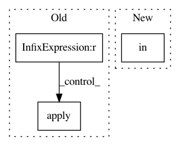

0c60922fb0614132433779ad45ab8f30783db2ae,torch/quantization/_learnable_fake_quantize.py,_LearnableFakeQuantize,forward,#_LearnableFakeQuantize#Any#,301
Before Change
self.zero_point.data.copy_(_zero_point)
if self.fake_quant_enabled[0] == 1:
if self.learning_enabled[0] == 1:
if self.use_grad_scaling:
grad_factor = 1.0 / (self.weight.numel() * self.quant_max) ** 0.5
else:
grad_factor = 1.0
if self.qscheme in (
torch.per_channel_symmetric, torch.per_channel_affine):
X = _LearnableFakeQuantizePerChannelOp.apply(
X, self.scale, self.zero_point, self.ch_axis,
self.quant_min, self.quant_max, grad_factor)
else:
X = _LearnableFakeQuantizePerTensorOp.apply(
X, self.scale, self.zero_point,
self.quant_min, self.quant_max, grad_factor)
After Change
self.scale.data.clamp_(min=self.eps.item())
if self.fake_quant_enabled[0] == 1:
if self.qscheme in (torch.per_channel_symmetric, torch.per_tensor_symmetric):
self.zero_point.data.zero_()
if self.use_grad_scaling:
In pattern: SUPERPATTERN
Frequency: 3
Non-data size: 3
Instances
Project Name: pytorch/pytorch
Commit Name: 0c60922fb0614132433779ad45ab8f30783db2ae
Time: 2021-02-03
Author: haichuan@fb.com
File Name: torch/quantization/_learnable_fake_quantize.py
Class Name: _LearnableFakeQuantize
Method Name: forward
Project Name: J535D165/recordlinkage
Commit Name: 77796d63a9a04a5c7639e999f4fa78af62bac405
Time: 2016-05-06
Author: jonathandebruinhome@gmail.com
File Name: recordlinkage/comparing.py
Class Name:
Method Name: _compare_fuzzy
Project Name: pgmpy/pgmpy
Commit Name: 45a769eb8338eec6740781ab46e74376d680c515
Time: 2020-08-11
Author: tristandeleu@users.noreply.github.com
File Name: pgmpy/sampling/base.py
Class Name:
Method Name: _return_samples